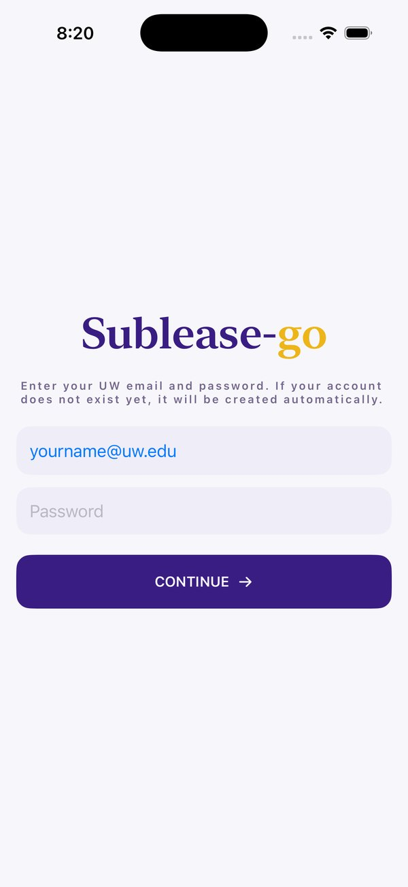
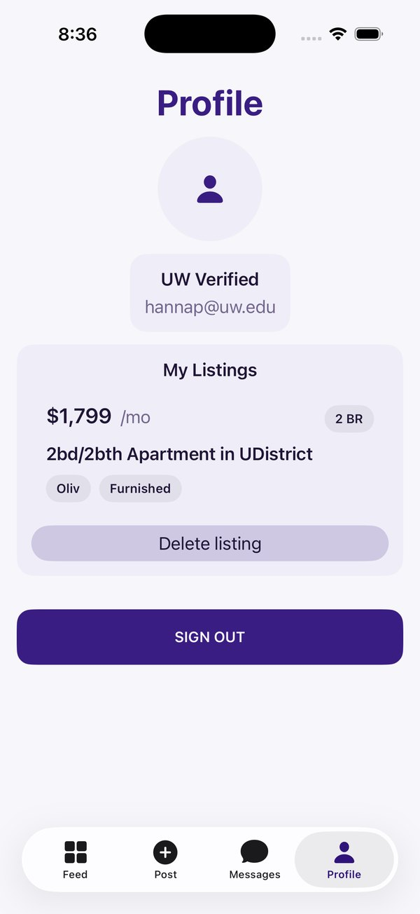

Verify with a UW email, and keep it simple
We wanted Sublease-go to be for UW students only, so sign-in requires a @uw.edu email, and profiles show a "UW Verified" badge. We'd talked about more extensive verification, but with 2 weeks, email-based auth gave us the trust we needed without eating the timeline. New users get an account automatically on first sign-in, so there's no separate sign-up flow.

